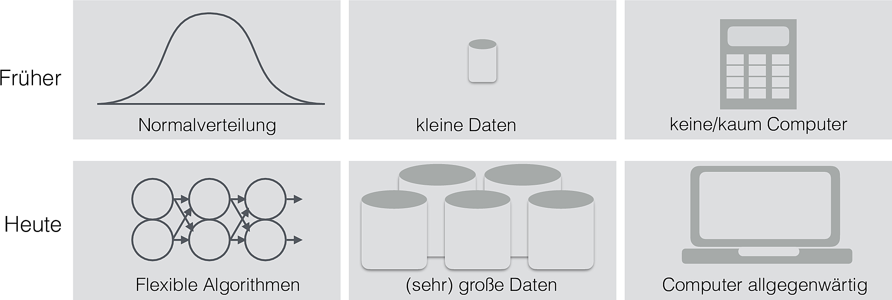
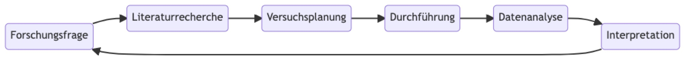
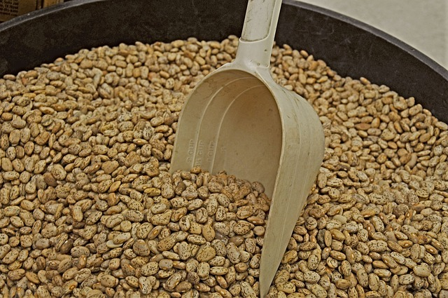
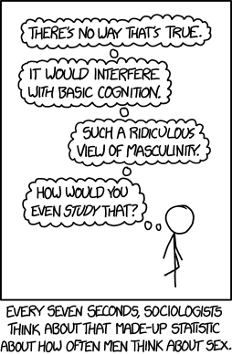

| id | Kriterium | Text |
|---|---|---|
| 1 | Forschungsfrage | … |
| 2 | Ursache (UV) | … |
| 3 | Wirkung (AV) | … |
| 4 | Hauptergebnis | … |
| 5 | Stichprobengröße | … |
| 6 | Studienablauf | … |
| 7 | Stärkster Aspekt | … |
| 8 | Schwächster Aspekt | … |
| 9 | Interessant ist … | … |
| 10 | Ansatzpunkt für weitere Studien… | … |
2 Rahmen: Hallo, Forschung!
Schlüsselwörter
Versuchsplanung, Statistik, R, Datenanalyse, Psychologie, Forschung

This image and their code are taken from the phantastic Spiro R package bei W. J. Schneider. Eine schöne Fraktalsammlung findet sich bei Flickr. Eine interessante, aber recht eigenwillige Antwort auf die Frage ” Wer bist und wer bin ich?” liefert Hofstadter et al. (2008).
2.1 Lernsteuerung
2.1.1 Lernziele
- Sie können einige Beispiele von psychologischen Studien nennen und einige Informationen zu diesen Studien wiedergeben.
- Sie können Definitionsbestandteile für Wissenschaft nennen und diskutieren.
- Sie können die drei Schlussarten der Wissenschaft erläutern und mit Beispielen verdeutlichen.
- Sie können KI-Tools nutzen, um wissenschaftliche Texte zusammenzufassen und zu interpretieren.
- Sie können den Nutzen der Wissenschaft für die Gesellschaft erläutern und mit Beispielen versehen.
2.1.2 Blick zum Fahrplan und Projektplan
Sie stehen am Anfang Ihrer Reise 😄. Wenn Sie es mir nicht glauben, werfen Sie einen Blick auf Abbildung 1.2 und Abbildung 1.3.
😈 Welcher Rat führt am sichersten zu einer schlechten Note?
👹 Ok, hier ist der Monster-Rat: “Lass dir Zeit, ach, dass kannst du nächste oder übernächste Woche auch noch erledigen, oder irgendwann halt!”
2.1.3 Folienskript
Das Folienskript zu diesem Kapitel finden Sie hier.
2.2 Wissenschaft zum Anschauen
Wissenschaftsmagazine wie In-Mind, Alltagsforschung.de oder Psychologie Heute arbeiten psychologische Forschungsarbeiten auf und präsentieren sie “sofagerecht”, also einfach zu rezipieren.
Der Nachteil solcher Magazine ist die Oberflächlichkeit der Darstellung: Viele Fragen zu der vorgestellten Forschung wird ein Bericht aus einem solchen Magazin unbeantwortet lassen. Der Nutzen solcher Magazine ist in ihrem Inspirationscharakter zu sehen: Man liest von faszinierender Forschung, fängt an, Fragen zu stellen und entwickelt Ideen (und Freude) auf eigene Forschung. Grund genug, dass wir uns einmal mit solchen Magazinen beschäftigen.
Übungsaufgabe 2.1 (Erarbeiten Sie eine Studie aus einem Wissenschaftsmagazin!) Suchen Sie sich eine Studie aus einem Wissenchaftsmagazin und arbeiten Sie die Kernaspekte heraus. Erarbeiten Sie ein Profil der Studie. Orientieren Sie sich an dem Leitfaden aus Tabelle 2.1. Sie können dieses Dateigerüst verwenden, um Ihre Ergebnisse aufzuschreiben.
Ein Studienprofil wie in Tabelle 2.1 passt nicht auf jede Studie, aber auf viele. Modifizieren Sie ggf. die Vorlage des Studienprofils, so dass es zu Ihrer Studie passt.
2.2.1 Popscience-Bücher
Fachartikel zu Fachbuch verhält sich wie Wissenschaftsmagazin zu Popscience-Buch. Hier sind einige Beispiele für solche Bücher.
Beispiel 2.1 (Auswahl an lesenswerten Popscience-Büchern) Kahneman (2012), Ariely (2012), Cialdini (2017), Ariely (2015)
Übungsaufgabe 2.2 (Welche Popscience-Bücher kennen Sie?) Stellen Sie ein Popscience-Buch kurz vor! Orientieren Sie sich an folgender Gliederung:
- Kernaussage des Buches ist …
- Gut fand ich an dem Buch, …
- Weniger gut fand ich an dem Buch, …
- Interessant fand ich …
Tipp: Lassen Sie sich ähnliche Bücher wie in Beispiel 2.1 vorschlagen, wenn Sie keinen Zugang finden.
2.2.2 Echte Forschung aus studentischer Feder
Auf der Seite des Instituts für Wirtschaftspsychologie (iwp) der FOM Hochschule finden Sie eine Auswahl an insgesamt gut aufbereiteten psychologischen Studien aus studentischer Feder.
Empfehlenswert ist z. B. die Arbeit zum Thema Selbstwirksamkeit, Selbstregulation und Prokrastination – Überprüfung eines Mediationsmodells. Die Arbeit ist frei im Netz verfügbar.
Übungsaufgabe 2.3 (Einblick in studentische Forschung) Fassen Sie eine studentische Forschungsarbeit mit Hilfe einer KI zusammen und präsentieren Sie die wesentlichen Ergebnisse! Nutzen Sie Tabelle 2.1 zur Gliederung Ihrer Analyse. Wichtig: Versuchen Sie die Stichhaltigkeit der Antworten der KI nachzuprüfen.
Teilen Sie sich dabei in Gruppen auf; nutzen Sie verschiedene KI-Dienste, s. Tabelle 2.2. \(\square\)
| Nr | Name |
|---|---|
| 1 | Custom GPT: AskYourPDF Research Assistant |
| 2 | SciSpace |
| 3 | Gemini |
| 4 | ChatPDF |
| 5 | Google Notebook LM |
| ? | … |
Übungsaufgabe 2.4 (KI zur Textzusammenfassung) Es gibt eine Reihe von KI-Tools, die Texte für Sie zusammenfassen. Dabei stellt sich naturgemäß die Frage, wie gut bzw. zuverlässig diese Dienste arbeiten?
Vergleichen Sie die Güte der Zusammenfassung verschiedener KI-Dienste. Wichtig: Lesen Sie den Text in Auszügen auch selber, um so herauszufinden, ob nicht vielleicht alle KI-Dienste einen Sachverhalt nur ungenau treffen.
Vergleichen Sie die dabei verschiedenen KI-Dienste, s. Tabelle 2.2.
Schreiben Sie Ihre Erfahrungen auf dieser Schreibwand zusammen. \(\square\)
Übungsaufgabe 2.5 (Text aus PDF extrahieren) Reiner Text ist für eine KI einfacher zu verarbeiten als ein PDF. Daher kann es Ihre Ergebnisse verbessern, wenn Sie einer KI nicht ein PDF zum Zusammenfassen geben (besonders, wenn es sehr lang ist), sondern eine Textdatei, die eben nur den zusammenfassenden Text enthält, s. Listing 2.1. Teilweise haben KI-Dienste auch Obergrenzen für Textmengen, die mit einer Textdatei besser steuerbar sind, als mit einer PDF-Datei.
Extrahieren Sie den Text aus einer wissenschaftlichen Arbeit in eine Textdatei. Überprüfen Sie dann, ob und inwiefern ein bestimmter KI-Dienst damit besser zurecht kommt. \(\square\)
library(pdftools) # ggf. das Paket vorab installieren
# Text aus PDF extrahieren; hier geben Sie IHREN Pfad an:
pdf_text <- pdf_text('https://raw.githubusercontent.com/sebastiansauer/fopra/main/pdf/02.pdf')
# Text in einer beliebigen Textdatei speichern:
writeLines(pdf_text, "Material/text_aus_kapitel2.txt")2.3 Was ist Wissenschaft?
2.3.1 Definitionsversuche
Definition 2.1 (Wissenschaft) Wissenschaft ist ein systematisches Unterfangen, das Wissen erzeugt und organisiert, primär in Form von testbaren Erklärungen über beobachtbare Phänomene. \(\square\)
Disziplinen, die wissenschaftliche Erkenntnisse zur Lösung praktischer Probleme nutzen (wie Medizin oder Wirtschaftspsychologie), nennt man auch angewandte Wissenschaft; Wissenschaftszweige mit weniger (direktem) Anwendungsbezug nennt man Grundlagenwissenschaft.
Aspekte der Wissenschaft, die die Erzeugung von Wissen in den Vordergrund stellen, nennt man Forschung.
Die Art und Weise einer Wissenschaft nennt man ihre wissenschaftliche Methode. Die wissenschaftliche Methode ist geprägt von dem Versuch, das Universum objektiv, korrekt, reproduzierbar und so einfach wie möglich zu erklären. Damit ist gemeint, dass rationale und fachlich informierte Menschen zu der gleichen Einschätzung eines wissenschaftlichen Arguments kommen sollten. Die Falsifizierung einer Hypothese stellt für viele das Kennzeichen wissenschaftlichen Fortschritts dar. Verifizieren wird hingegen von vielen als kein starkes Mittel wissenschaftlichen Fortschritts gesehen. Daraus kann die Relevanz des Zweifelns (Skeptizismus) für die Wissenschaft abgeleitet werden.
Da die Phänomene der Welt (Evolution, Gravitation, Liebe, Inflation, Agression, …) komplex sind, neigen auch die Erklärungsansätze der Wissenschaft dazu, kompliziert zu sein. Allerdings sollten die Erkärungsansätze so einfach wie möglich sein (und so komplex wie nötig).
Definition 2.2 (Theorie) Die Wissenschaft organisiert ihr Wissen (auch) in Theorien. Theorien sind ein Bündel von Aussagen. Diese Aussagen sind
- aufeinander bezogen
- widerspruchsfrei
- häufig Kausalaussagen
- prüfbar \(\square\)
Beispiel 2.2 (Beispiele für Theorien) Zu den bekanntesten und einflussreichsten Theorien gehören die Evolutionstheorie oder die Relativitätstheorie.\(\square\)
2.3.2 Eigenschaften von Wissenschaft
Zu den (gewünschten1) Eigenschaften von Wissenschaft gehören:
- Objektivität: Ein Befund hängt nicht davon ab, wer Messungen oder einen Versuch durchführt. Die Sprache ist nüchtern und unvoreingenommen.
- Offenheit: Der Leser muss nicht glauben, sondern kann selber nachprüfen.
- Abstraktion: Eine wissenschaftliche Aussage soll möglichst weite Gültigkeit besitzen, Spezifika von Einzelfällen werden auf zugrundeliegende Konstanzen verallgemeinert
- Analyse: Komplexe Probleme werden soweit als möglich in Einzelaspekte aufgebrochen2
- Evidenzgründung: Schlüsse werden auf Basis von Daten (Fakten, Messungen, etc.) gezogen. Dabei wird zwischen Fakt und Schluss (und Meinung) klar unterschieden.
- Quellen: Aussagen werden mit Quellenangaben untermauert.
Zitate zu den Eigenschaften von Wissenschaft
Non-reproducible single occurrences are of no significance to science. – Karl Popper
Der Fortgang der wissenschaftlichen Entwicklung ist im Endeffekt eine ständige Flucht vor dem Staunen.3 – Albert Einstein
Auf die Frage, was der Nutzen von Grundlagenforschung sei (im Gegensatz zur praktischen Relevanz angewandter Forschung), soll Michael Faraday gesagt haben: „Sir, what is the use of a new-born child“?
Ohne Spekulation gibt es keine neue Beobachtung. – Charles Darwin
In Wissenschaft geht es nicht um Wahrheit, sondern darum, auf bessere Art falsch zu sein. – Thomas Schofield
Wenn alle Experten sich einig sind, ist Vorsicht geboten. – Bertrand Russel
2.3.3 Mathematik als Grundlage der Wissenschaft?

Im XKCD-Cartoon 435 wird Mathematik als Grundlage der Wissenschaften dargestellt.
Übungsaufgabe 2.6 (Ist die Mathematik die Grundlage der Wissenschaften?) Beziehen Sie Stellung zu dem Cartoon und den damit verbundenen Aussagen!
2.3.4 Was ist ein Modell?
Definition 2.3 Ein wissenschaftliches Modell ist eine vereinfachte (aber kohärente) Auffassung eines Forschungsgegenstands (d.h. ein Auszug der Realität). Häufig spielen Metaphern oder Analogien dabei eine Rolle (z. B. lehnt sich das Atommodell nach Bohr an das Sonnensystem an).\(\square\)
Modelle können z. B. grafisch, mathematisch oder statistisch ausgebildet sein. Modelle erläutern das Zusammenspiel mehrerer Merkmale innerhalb des Modells. Der Nutzen von Modellen besteht darin, komplexe Sachverhalte verständlich und „greifbar“ oder „anschaulich“ zu machen. Häufig versucht man, wesentliche Größen (wie Einflussfaktoren) in das Modell aufzunehmen und unwesentliche außen vor zu lassen. Die Güte eines Modell kann man an diesem Spagat bemessen.
Beispiel 2.3 Beispiele für Modelle: Globus, Klimamodelle, Doppelhelix der DNA. \(\square\)
Es hat sich herausgestellt, dass viele Phänomene des Universums kompliziert (oder besser: komplex) sind, so dass („richtiges“) Vereinfachen in Form von Modellbildung nützlich ist – tatsächlich der zentrale Weg des wissenschaftlichen Denkens darstellt.
Modelle ermöglichen damit die Beschreibung, Erklärung und Vorhersage von Phänomen (und damit auch die Einflussnahme). Modelle sind ähnlich zu Theorien, aber meist kleiner gefasst und die Analogie oder Metapher steht im Vordergrund.
2.3.5 Beispiele für Wissenschaften
Tabelle 2.3 stellt Beispiele vor für Wissenschaften und ihre Einordnung.
| Name | Zweig | Empirisch |
|---|---|---|
| Philosophie | Formalwissenschaft | ❌ |
| Mathematik | Formalwissenschaft | ❌ |
| Theoretische Informatiok | Formalwissenschaft | ❌ |
| Psychologie | Sozialwissenschaft | ✅ |
| Physik | Naturwissenschaft | ✅ |
| Maschinenbau | Technikwissenschaft | ✅ |
| BWL | Sozialwissenschaft | ✅ |
| Angewandte Informatik | Technikwissenschaft | ✅ |
\(\square\)
2.3.6 Die drei Ziele einer empirischen Wissenschaft
Abbildung 3.4 zeigt die drei Ziele einer empirischen Wissenschaft. Es gibt nur diese drei! Allerdings könnte man auch von Zielarten sprechen.
graph TD
subgraph Ziele
A[beschreiben]
B[vorhersagen]
C[erklären]
end
Beispiele für die einzelnen Zielarten:
- Beschreiben: “Wie groß ist der Gender-Paygap in der Branche X im Zeitraum Y?”
- Vorhersagen: Wenn eine Person X4 100 Stunden auf die Statistikklausur lernen, welche Note kann diese Person dann erwarten?
- Erklären: Wie viel bringt das Lernen auf die Statistik-Klausur?
2.4 Wozu Wissenschaft?
2.4.1 Ich will kein Wissenschaftler werden!
Beispiel 2.4 (Unternehmensberatung und Wissenschaft) Toni arbeitet bei einer Unternehmensberatung. Um als Unternehmensberater zu arbeiten, braucht es wissenschaftliches Denken, sagt Toni. Sie arbeitete erst als Wissenschaftlerin, jetzt in der Unternehmensberatung.
Arbeitsweisen in beiden Feldern:
- Evidenzbasiertes Vorgehen: Zahlen, Daten, Fakten
- Systematisches Vorgehen: Hohe Qualitätsstandards bei den Kernprozessen
- Annahmen und Ideen testen: Nicht glauben, sondern überprüfen
- Gute Schätzungen erstellen: “Tacheles reden” \(\square\)
2.4.2 Wissenschaft im Alltag
2.4.3 Wissenschaft und Lernen
Beispiel 2.5 (Aus der Forschung) Handschriftliche Notizen merkt man sich besser als mit der Tastatur getippte (Mueller & Oppenheimer, 2014).\(\square\)
2.4.4 Wissenschaft als Wert an sich
Wir verdanken den technischen Fortschritt und damit Wohlstand, Gesundheit, Langlebigkeit und Komfort der Wissenschaft.
Der Geist der Wissenschaft ist: Selber denken. Damit ist Wissenschaftlichkeit die Grundlage der freien Gesellschaft.
Wichtig
Habe den Mut, dich deines eigenen Verstandes zu bedienen! Das Motto Kants fasst die Idee der Wissenschaft zusammen. Damit kann Wissenschaft verstanden werden als die Grundlage einer aufgeklärten Gesellschaft.
2.4.5 Reproduzierbarkeit
Definition 2.4 (Reproduzierbarkeit) Reproduzierbarkeit (“Wiederholbarkeit”) ist das Vermögen, eine Analyse durch Dritte zu wiederholen und zu einem ähnlichen (gleichen) Ergebnis wie in der ursprünglichen Analyse zu bekommen. \(\square\)
Es handelt sich um ein Kernkriterium für wissenschaftliche Qualität.
Wenn ein Befund nicht reproduzierbar ist, ist es dann echtes Wissen?
2.4.6 Forschung früher und heute

2.4.7 Ein Prozess der Forschung
Abbildung 2.3 stellt eine mögliche Gliederung des Prozesses der Forschung dar.

2.4.8 Ursachensuche
Die Suche nach den Ursache ist vielleicht die wichtigste Aufgabe der Forschung.

Bildquelle: Jastrow, Wikipedia, Gemeinfrei
{kind=link}
flowchart LR Ursache --> Wirkung
Die Ursache U eines Ereignisses E (Wirkung) ist eine notwendige und/oder hinreichende Bedingung, damit E eintritt.
Ein Ereignis kann mehrere Ursachen haben.
Zu jedem Ereignis E gibt es mindestens eine Ursache U.
Zufall ist keine Ursache, sondern eine Umschreibung für die Tatsache, dass die Ursache unbekannt ist.
Kennt man eine Ursache eines Ereignisses, so schließt das nicht aus, dass es andere Ursachen gibt.
Kenntnis der Ursache(n) von E ist i. A. nötig, um den Verlauf bzw. das Eintreten einer Wirkung zu beeinflussen.
Kenntnis der Ursache(n) von E ist i. A. hilfreich, aber nicht nötig, um den Verlauf bzw. das Eintreten einer Wirkung vorherzusagen.
2.5 Wissenschaftliches Schließen
2.5.1 Arten des Schließens
Es gibt drei Arten, wie man zu Wissen (über nicht beobachtbare Dinge) kommen kann (Walach & Stillfried, 2013).
Bohnen! Die Grundfesten der Wissenschaft!

Quelle: James_Maynard Pixabay Licence
2.5.1.1 Induktion
Hm ich habe schon 30 Bohnen aus dem Sack gezogen … . Alle weiß. Noch 30 Bohnen … schon wieder alle weiß. Ich hab’s: Die Bohnen müssen alle weiß sein!
- Beschreibung: Sammlung vieler Einzelbeobachtungen; atheoretisch bzw. „theorielos“
- Stärke: Nahe an der „Wirklichkeit“
- Schwäche: Einzelaussagen können nie sicheres Wissen erzeugen; Die Auswahl von Beobachtungen benötigt eine Theorie
2.5.1.2 Abduktion
Vor mir steht ein Sack; ich sehe, dass Bohnen darin sind. Ich finde eine weiße Bohne irgendwo im Raum auf den Boden. Daraus schließe ich: „Die Bohne muss aus dem Sack sein!
- Beschreibung: Lose verknüpfte Einzel-beobachtungen werden zu einer Theorie verknüpft.
- Stärke: Kreativ, schafft neues Wissen im Sinne einer „kühnen Vermutung“
- Schwäche: Fehleranfällig
2.5.1.3 Deduktion
Ich habe die Bohnen in den Sack gefüllt. Sie waren alle weiß. Jetzt nehme ich eine Bohne aus dem Sack: sie ist weiß!
- Beschreibung: Aus einer Allgemeinaussage (Theorie) werden Hypothesen logisch abgeleitet.
- Stärke: Sicheres Wissen bei korrekter Ausführung; „logisch zwingend“
- Schwäche: Keine wirklich neuen Erkenntnisse möglich
Beispiel 2.6 (Beispiele zu den Schlussarten) Induktion „In meiner Studie-Stichprobe war der IQ im Mittel 120. Daraus schließe ich, dass in der Grundgesamtheit aller Studies der IQ im Mittel 120 beträgt“ (Verallgemeinerung).
Abduktion “Joachim, Du hast 10 Mal am Stück Kopf geworfen; das passiert selten bei fairen Münzen. Daher schließe ich, dass Deine Münze nicht fair ist“ (Spekulation! Joachim könnte Glück gehabt haben).
Deduktion „In einer Normalverteilung liegen 2/3 aller Werte höchstens eine SD-Einheit vom Mittelwert entfernt. Mir liegt ein Messwert aus einer Normalverteilung vor, der nur als eine halbe SD-Einheit vom Mittelwert ist. Daher schließe ich, dass er zu den inneren 2/3 aller Werte gehört“ (wenn die Regel der Normalverteilung wahr ist, dann muss der Schluss richtig sein, mit Sicherheit).\(\square\)
Vorsicht
Gerade die Deduktion kann man falsch anwenden. Beispiel für korrekte Anwendung
Annahmen:
- (Alle) Nobelpreisträger sind schlau.
- Albert Einstein ist Nobelpreisträger.
Folgerung:
Albert Einstein ist schlau (richtig!).
Beispiel für falsche Anwendung
Annahmen:
- (Alle) Nobelpreisträger sind schlau.
- Alber Einstein ist schlau.
Folgerung:
Albert Einstein ist Nobelpreisträger (falsch!). Nicht alle Schlauen sind Nobelpreisträger. \(\square\)
2.5.2 Alle zwei Minuten ein Einbruch?
Auf der Webseite eines Anbieters für Sicherheitstechnik war zu lesen:
Alle zwei Minuten findet in Deutschland ein Einbruchversuch statt.
Übungsaufgabe 2.7 (Wie viele Einbrüche passieren in Deutschland?) Wie fundiert ist obige Aussage zu “alle zwei Minuten” wohl?
2.6 KI-Arbeitsmittel
Vorsicht
Prüfen Sie, welche KI-Hilfsmittel für Ihre Qualifizierungsarbeit erlaubt sind. Informieren Sie sich, was einen Plagiatsfall darstellt und stellen Sie sicher, keinen Plagiatsfall zu begehen. \(\square\)
Vorsicht
Geben Sie keine personenbezogenen Daten Dritter an eine KI weiter. Auch bei den eigenen personenbezogenen Daten sollten Sie sparsam ein. \(\square\)
2.6.1 Sammlung an KI-Tools
Schauen Sie sich mal diesen Überblick über KI-Arbeitsmittel für Forschung an.
Bei vielen Diensten müssen Sie sich ein Konto anlegen, um den Dienst nutzen zu können. Mithilfe eines anonymen EMail-Kontos minimieren Sie die Daten, die Sie preisgeben.
2.6.2 Grundlagen des Promptings
Large-Language-Modelle wie ChatGPT oder Google Gemini haben ein Chatbot-Interface. Man spricht das Programm mit einem sog. Prompt an. Dabei gilt die Grundregel: Garbage in, garbage out. Anders gesagt: Je besser Ihr Prompt, desto besser die Ausgabe der KI (tendenziell).
KI-Modelle basieren auf umfangreichen Textdatensätzen, was die bessere Leistung bei englischen Prompts erklärt. Die KI versucht, die wahrscheinlichsten folgenden Wörter vorherzusagen, wobei der Prompt diese Vorhersage steuert. Je spezifischer der Prompt, desto fokussierter die Vorhersage.
1. Spezifität ist entscheidend
Begründung: KI analysiert Muster in Daten. Vage Anfragen führen zu ungenauen Ergebnissen. Umsetzung: Anstatt “Fasse dies zusammen” sollte man präzisieren: “Fasse diesen Artikel zusammen, konzentriere dich auf die Hauptargumente des Autors und erstelle eine Zusammenfassung mit drei Stichpunkten.” Ebenso ist es besser, anstelle von “Schreibe Code” zu sagen: “Schreibe eine Python-Funktion, die die Fakultät einer gegebenen ganzen Zahl berechnet.”
2. Kontext ist unerlässlich
Begründung: KI benötigt ein Verständnis des “Warum” hinter der Anfrage. Umsetzung: Zum Beispiel: “Erkläre die Ursachen der Französischen Revolution aus der Perspektive eines Geschichtsprofessors, der zu Gymnasiasten spricht.” Oder: “Bestimme anhand eines Datensatzes von Schülernoten und eines Bewertungsrasters die Endnote für jeden Schüler.”
3. Die genaue Angabe des gewünschten Formats ist wesentlich
Begründung: KI kann verschiedene Ausgabeformate liefern, von Absätzen bis zu Tabellen oder Code. Umsetzung: Anfragen wie “Gib eine Liste mit fünf Schlüsselpunkten” oder “Formatiere die Ausgabe als Tabelle mit den Spalten ‘Name’, ‘Datum’ und ‘Zusammenfassung’” oder “gebe das Ergebniss im JSON Format zurück” führen zu präziseren Ergebnissen.
4. Beispiele sind hilfreich
Begründung: KI lernt durch Beispiele. Umsetzung: Man kann beispielsweise angeben: “Hier ist ein Beispiel für den gewünschten Stil: [Beispieltext]. Schreibe nun einen ähnlichen Text über [Thema].” Oder man gibt Beispiele für die Eingabe und die gewünschte Ausgabe.
5. Iterative Verfeinerung ist notwendig
Begründung: Das erste Ergebnis ist selten perfekt. Umsetzung: Bei unbefriedigenden Ergebnissen sollte der Prompt angepasst werden, indem man ihn umformuliert, mehr Kontext hinzufügt oder das Format ändert.
Praktische Ratschläge:
- Klare Begrenzer (z. B. dreifache Anführungszeichen oder Bindestriche) erleichtern die Trennung von Anweisungen und Kontext.
- Komplexe Aufgaben sollten in kleinere Prompts unterteilt werden.
- Experimentieren ist wichtig, da es keine allgemeingültige Methode gibt.
- Sie können den Bot auch fragen, ob Sie alle nötigen Informationen in Ihrem Prompt übermittelt haben, die der Bot für ein gutes Ergebnis benötigt.
- In ähnlicher Form können Sie den Bot auch anweisen, Ihren Prompt zu verbessern.
2.7 Fazit
👺 Wieso solltest du überhaupt noch irgendwas lernen müssen!? Das macht doch alles die KI für dich. Mach dich locker und chill dein Leben!
🕺 Wenn du nicht mehr kannst als eine KI, warum sollte dich irgendeine Firma einstellen?
Wichtig
Wir alle müssen uns ständig bemühen, Dinge zu können, die die Maschine (z. B. eine KI) noch nicht kann. Dass Maschinen uns Arbeit abnehmen, ist schon immer so – das ist der Fortschritt, der uns das Leben komfortabel macht. Dennoch müssen wir, schon im eigenen Interesse, immer daran arbeiten, der Gesellschaft Mehrwert gegenüber Maschinen bieten zu können. \(\square\)
Übrigens: Vorsicht, Forschung kann süchtig machen, s. XKCD 1564.

2.8 Vertiefung
Was ist Wissenschaft? – Antworten auf diese Frage versucht u.a. Chalmers & Chalmers (2007) zu geben. Einen breiteren Fokus auf die methodologischen Grundlagen der Psychologie liefert Walach & Stillfried (2013). Wer sich mit den Grundlagen der Logik befassen möchte - als Fundament vernünftiger Aussagen -, der findet etwa bei Suppes (1999) eine nützliche Einführung. Sie zweifeln, ob die Psychologie überhaupt eine Wissenschaft ist? Das ist keine Blasphemie, wie man Galliker (2016) nachlesen kann. Dass Psychologie eine Wissenschaft ist, ist für Dienes (2008) klar. Übrigens ist dieses Buch weit rezipiert worden, mit positivem Echo. Wer Lust hat auf einen Klassiker der Wissenschaftstheorie, der kommt an Popper (2013) nicht vorbei.